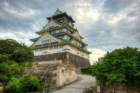
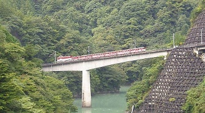
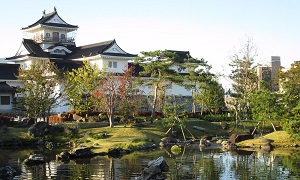

Destinations
Kyoto: As the ancient capital from 1200 years ago, the Japanese see Kyoto as the cultural heart of the country. The beautiful surroundings and the cultural heritage attract people from all over the world. Visitors are entranced by the charms of the city and the vibrantsites and sounds of traditional Japan. Kyoto is a sophisticated blend of the ancient and the modern, an urban environment where museums, four star restaurants and active entertainment venues flourish alongside temples, small shops and quiet neighborhoods. Less crowded than other cities in Asia, and having a lower cost of living than Tokyo, Kyoto assures an ideal living and creative environment
Kumamoto-ken is a prefecture of Japan located on the island of Kyūshū.[1] Kumamoto Prefecture has a population of 1,748,134 (1 June 2019) and has a geographic area of 7,409 km² (2,860 sq mi). Kumamoto Prefecture borders Fukuoka Prefecture to the north, Ōita Prefecture to the northeast, Miyazaki Prefecture to the southeast, and Kagoshima Prefecture to the south.
Miyajima is an island in the Seto Inland Sea, due south of Hiroshima. Its original name is Itsukushima (厳島, lit. 'strict island'), but is more commonly known as Miyajima (宮島, lit. 'shrine island'), due to the famous Itsukushima Shrine found on its shores. This Shinto shrine has not only been honoured as a UNESCO World Heritage Site, but has been ranked as one of the "Three Views of Japan", a list of iconic scenes compiled in the 17th century.
 Ōsaka-shi , pronounced [oːsakaɕi]; commonly just 大阪, Ōsaka [oːsaka] (listen)) is a designated city in the Kansai region of Honshu in Japan. It is the capital city of Osaka Prefecture and the largest component of the Keihanshin Metropolitan Area, the second-largest metropolitan area in Japan and among the largest urban areas in the world with more than 20 million inhabitants. Osaka was traditionally considered Japan's economic hub. By the Kofun period (300–538) it had developed into an important regional port, and in the 7th and 8th centuries, it served briefly as the imperial capital. Osaka continued to flourish during the Edo period (1603–1867) and became known as a center of Japanese culture.
 Shizuoka-shi, [ɕizɯꜜoka]) is the capital city of Shizuoka Prefecture, Japan, and the prefecture's second-largest city in both population and area. It has been populated since prehistoric times. As of 1 December 2019, the city had an estimated population of 690,881 in 106,087 households,and a population density of 490 inhabitants per square kilometre (1,300/sq mi). The city's name is made up of two kanji, 静 shizu, meaning "still" or "calm"; and 岡 oka, meaning "hill(s)".
 Toyama City (富山) is the largest city and capital of Toyama Prefecture in the Hokuriku Region of northern Chubu. The city is a former castle town and is historically a center of medicine. Due to its position on the Hokuriku Shinkansen, Toyama is a popular stop for tourists on the way to other attractions in the area such as the Tateyama Kurobe Alpine Route .
In addition to the way Tokyo looks, it is also the way the whole city is arranged that comes as a surprise to the Western visitor: no real centre, but instead a multitude of districts so large that its easier to think of them as a collection of different towns, each with its own distinct personality, and all connected to each other by public transport systems that offer the ultimate in efficiency. Anyone who tends towards claustrophobia would be well advised to avoid Japan's capital. It has a population density 50 percent greater than that of London and everything seems to move at 100 mph. However, it would be a shame to let these aspects put you off: Tokyo is a fascinating city with so many different sides to offer that it is impossible not to find at least several aspects to your liking.
 Kanagawa-ken is a prefecture of Japan located in the Kantō region of Honshu.[1] Kanagawa Prefecture is the second-most populous prefecture of Japan at 9,058,094 (1 October 2015) and has a geographic area of 2,415 km2 (932 sq mi). Kanagawa Prefecture borders Tokyo to the north, Yamanashi Prefecture to the northwest, and Shizuoka Prefecture to the west. Kanagawa Prefecture is part of the Greater Tokyo Area, the most populous metropolitan area in the world, with Yokohama and many of its cities being major commercial hubs and southern suburbs of Tokyo.
Kanagawa-ken is a prefecture of Japan located in the Kantō region of Honshu.[1] Kanagawa Prefecture is the second-most populous prefecture of Japan at 9,058,094 (1 October 2015) and has a geographic area of 2,415 km2 (932 sq mi). Kanagawa Prefecture borders Tokyo to the north, Yamanashi Prefecture to the northwest, and Shizuoka Prefecture to the west. Kanagawa Prefecture is part of the Greater Tokyo Area, the most populous metropolitan area in the world, with Yokohama and many of its cities being major commercial hubs and southern suburbs of Tokyo.
 Hyōgo-ken is a prefecture of Japan located in the Kansai region of Honshu.[1] Hyōgo Prefecture has a population of 5,469,762 (as of 1 June 2019) and has a geographic area of 8,400 square kilometres (3,200 sq mi). Hyōgo Prefecture borders Kyoto Prefecture to the east, Osaka Prefecture to the southeast, and Okayama Prefecture and Tottori Prefecture to the west.
Hyōgo-ken is a prefecture of Japan located in the Kansai region of Honshu.[1] Hyōgo Prefecture has a population of 5,469,762 (as of 1 June 2019) and has a geographic area of 8,400 square kilometres (3,200 sq mi). Hyōgo Prefecture borders Kyoto Prefecture to the east, Osaka Prefecture to the southeast, and Okayama Prefecture and Tottori Prefecture to the west.